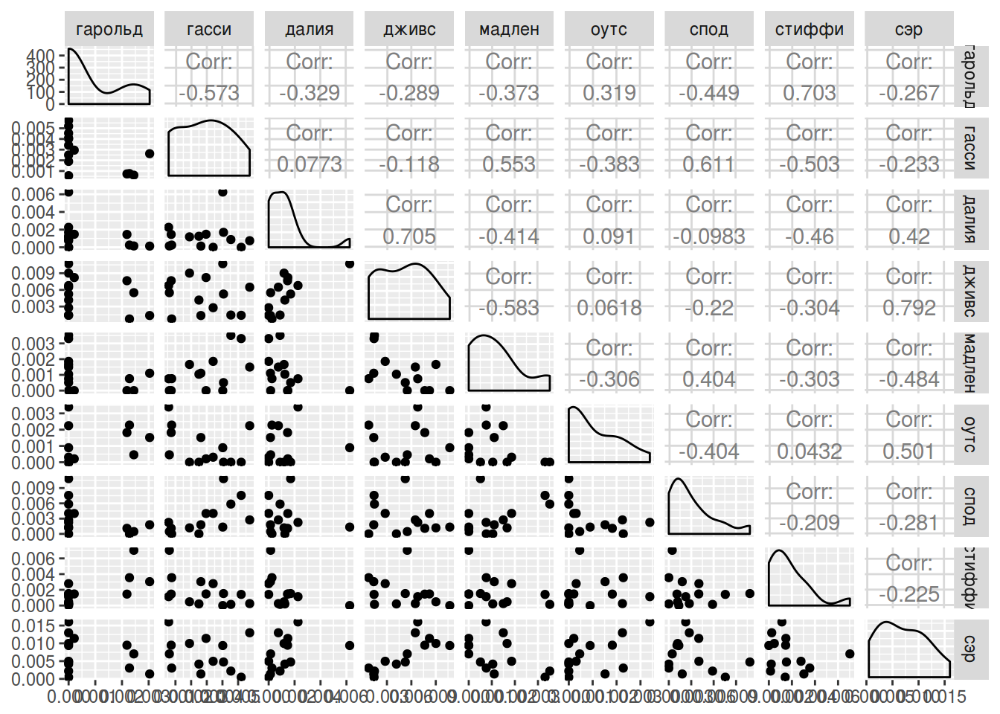
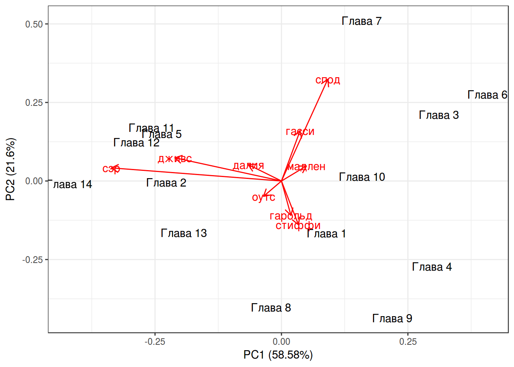

- Уменьшение размерности: PCA, LDA
Г. Мороз
1. Введение
Метод главных компонент (PCA, Principal Component Analysis) применим к числовым данным, в которых строчки — это точки наблюдения, а столбцы — это исследуемые переменные. Данный метод часто приводят и используют как метод уменьшения размерности, однако я разделяю мнение, согласно которому это лишь метод смены перспективы, в результаты которого некоторое количество размерностей становится маловажными.
1.1 Библиотеки
library(ggfortify)
library(GGally)1.2 Фамильная честь Вустеров
В данной лекции я буду использовать данные из романа П. Г. Вудхауза “Фамильная честь Вустеров”. В датасете собраны несколько переменных:
- chapter — номер главы
- гарольд — частотность появления имени в каждой из глав
- гасси — частотность появления имени в каждой из глав
- далия — частотность появления имени в каждой из глав
- дживс — частотность появления имени в каждой из глав
- мадлен — частотность появления имени в каждой из глав
- оутс — частотность появления имени в каждой из глав
- спод — частотность появления имени в каждой из глав
- стиффи — частотность появления имени в каждой из глав
- сэр — частотность появления имени в каждой из глав
wodehouse <- read.csv("https://goo.gl/8RJDwK")
library(GGally)
ggpairs(wodehouse[,-1])
2. Дисперсия, ковариация, корреляция Пирсона
\[var(X) = \frac{\sum_{i = 1}^n(x_i - \bar{x})^2}{n - 1}\]
\[cov(X, Y) = \frac{\sum_{i = 1}^n(x_i - \bar{x})(y_i-\bar{y})}{n - 1}\]
cov(wodehouse[,-1])## гарольд гасси далия дживс
## гарольд 1.372875e-06 -1.178804e-06 -6.161597e-07 -1.087033e-06
## гасси -1.178804e-06 3.079694e-06 2.170550e-07 -6.615942e-07
## далия -6.161597e-07 2.170550e-07 2.560710e-06 3.618399e-06
## дживс -1.087033e-06 -6.615942e-07 3.618399e-06 1.029295e-05
## мадлен -5.017748e-07 1.114755e-06 -7.615052e-07 -2.148603e-06
## оутс 4.177791e-07 -7.493884e-07 1.624905e-07 2.211649e-07
## спод -1.654950e-06 3.370561e-06 -4.945526e-07 -2.215768e-06
## стиффи 1.555109e-06 -1.666275e-06 -1.389433e-06 -1.843664e-06
## сэр -1.469249e-06 -1.922950e-06 3.155337e-06 1.193258e-05
## мадлен оутс спод стиффи
## гарольд -5.017748e-07 4.177791e-07 -1.654950e-06 1.555109e-06
## гасси 1.114755e-06 -7.493884e-07 3.370561e-06 -1.666275e-06
## далия -7.615052e-07 1.624905e-07 -4.945526e-07 -1.389433e-06
## дживс -2.148603e-06 2.211649e-07 -2.215768e-06 -1.843664e-06
## мадлен 1.318322e-06 -3.925977e-07 1.459139e-06 -6.577010e-07
## оутс -3.925977e-07 1.246261e-06 -1.418115e-06 9.103099e-08
## спод 1.459139e-06 -1.418115e-06 9.893695e-06 -1.244713e-06
## стиффи -6.577010e-07 9.103099e-08 -1.244713e-06 3.568675e-06
## сэр -2.612465e-06 2.625355e-06 -4.146631e-06 -1.999536e-06
## сэр
## гарольд -1.469249e-06
## гасси -1.922950e-06
## далия 3.155337e-06
## дживс 1.193258e-05
## мадлен -2.612465e-06
## оутс 2.625355e-06
## спод -4.146631e-06
## стиффи -1.999536e-06
## сэр 2.207589e-05\[cor(X, Y) = \frac{cov(X, Y)}{\sigma_X\times\sigma_Y}\]
cor(wodehouse[,-1])## гарольд гасси далия дживс мадлен
## гарольд 1.0000000 -0.57328735 -0.32862278 -0.28917272 -0.3729775
## гасси -0.5732873 1.00000000 0.07729222 -0.11750818 0.5532418
## далия -0.3286228 0.07729222 1.00000000 0.70480092 -0.4144594
## дживс -0.2891727 -0.11750818 0.70480092 1.00000000 -0.5832781
## мадлен -0.3729775 0.55324184 -0.41445938 -0.58327808 1.0000000
## оутс 0.3193940 -0.38251524 0.09095850 0.06175072 -0.3062898
## спод -0.4490452 0.61061743 -0.09825464 -0.21957111 0.4040236
## стиффи 0.7025735 -0.50261963 -0.45962545 -0.30419950 -0.3032245
## сэр -0.2668830 -0.23321428 0.41966860 0.79159912 -0.4842622
## оутс спод стиффи сэр
## гарольд 0.31939405 -0.44904519 0.70257349 -0.2668830
## гасси -0.38251524 0.61061743 -0.50261963 -0.2332143
## далия 0.09095850 -0.09825464 -0.45962545 0.4196686
## дживс 0.06175072 -0.21957111 -0.30419950 0.7915991
## мадлен -0.30628984 0.40402356 -0.30322448 -0.4842622
## оутс 1.00000000 -0.40385722 0.04316496 0.5005235
## спод -0.40385722 1.00000000 -0.20947701 -0.2805802
## стиффи 0.04316496 -0.20947701 1.00000000 -0.2252769
## сэр 0.50052346 -0.28058019 -0.22527691 1.00000003. Собственный вектор, собственное значение
Как вы знаете, матрицы можно перемножать. Подсказка.
{kind=link}
m1 <- matrix(c(2, 2, 3, 1), nrow = 2)
m2 <- matrix(c(1, 3), nrow = 2)
m3 <- matrix(c(3, 2), nrow = 2)
m1## [,1] [,2]
## [1,] 2 3
## [2,] 2 1m2## [,1]
## [1,] 1
## [2,] 3m1 %*% m2## [,1]
## [1,] 11
## [2,] 5m1## [,1] [,2]
## [1,] 2 3
## [2,] 2 1m3## [,1]
## [1,] 3
## [2,] 2m1 %*% m3## [,1]
## [1,] 12
## [2,] 8В первом примере мы получили матрицу \(\left(\array{11\\ 5}\right)\), а во втором случае \(\left(\array{12\\ 8}\right) = 4 \times \left(\array{3\\ 2}\right)\), т. е. при умножении матрицы мы получили значение, равное скалярному умножению той же самой матрицы.
Мы можем думать об одной матрице, как о векторе \(\left(\array{3\\ 2}\right)\) в двумерном пространстве. Тогда матрица \(\left(\array{2 & 3\\ 2 & 1}\right)\) — это матрица некоторой трансформации А, которая изменяет вектор \(\left(\array{3\\ 2}\right)\). В таком случае собственный вектор (eigenvector) — это тот постянный объект, который подвергается трансформации, а собственное значение (eigenvalues) — это скалярный мультипликатор собсвтенного вектора (в нашем случае собственное значение равно 4).
Свойства собсвтенных векторов:
- собственные векторы можно найти только для квадратных матриц (и то не для всех)
- все собственные векторы матрицы перпендекулярны друг другу вне зависимости от размерности.
- принято задавать собственные векторы длинной 1, так что найдя собственный вектор \(\left(\array{3\\ 2}\right)\), мы узнаем его длинну \[\sqrt{3^2+2^2} = \sqrt{13},\] так что теперь можно отмасштабировать вектор: \[\left(\array{3\\ 2}\right) \times \frac{1}{\sqrt{13}} = \left(\array{3/\sqrt{13}\\ 2/\sqrt{13}}\right)\]
Как найти собственный вектор в R:
m <- matrix(c(2, 2, 3, 1), nrow = 2)
eigen(m)## eigen() decomposition
## $values
## [1] 4 -1
##
## $vectors
## [,1] [,2]
## [1,] 0.8320503 -0.7071068
## [2,] 0.5547002 0.7071068Собственные значения в переменной values функция всегда возвращает в убывающем порядке, а каждая колонка в переменной eigenvectors соответствует элементу в переменной values. Сравните со значениями, которые мы получили руками:
3/sqrt(13)## [1] 0.83205032/sqrt(13)## [1] 0.55470024. PCA
Обычно переменные, которые используют в PCA нужно обязательно нормализовать, но так как мы будем использовать частотность, эти переменные не нуждаются в нормализации. Давайте сравним результат работы функций, которые мы рассмотрели перед этим и функции prcomp.
eigen(cov(wodehouse[,-1]))## eigen() decomposition
## $values
## [1] 3.245800e-05 1.196687e-05 4.517294e-06 3.377992e-06 1.319692e-06
## [6] 9.606964e-07 5.074912e-07 2.534438e-07 4.758608e-08
##
## $vectors
## [,1] [,2] [,3] [,4] [,5]
## [1,] 0.04446386 -0.26045490 -0.07123814 -0.2007927 -0.19032360
## [2,] 0.08779348 0.38160590 0.15116503 0.2628203 0.33907652
## [3,] -0.15615004 0.12382054 0.44598913 -0.1200921 -0.57733956
## [4,] -0.50150883 0.17557608 0.44773479 -0.4588859 0.25194436
## [5,] 0.11753413 0.11397729 -0.02832850 0.3441355 0.25226081
## [6,] -0.08429973 -0.11600713 -0.21296940 0.2130548 -0.52978937
## [7,] 0.21798564 0.77103418 -0.39697535 -0.3648273 -0.21338990
## [8,] 0.07986552 -0.33105390 -0.36958846 -0.5731985 0.24597480
## [9,] -0.79975269 0.09921106 -0.48203526 0.2003306 0.04069356
## [,6] [,7] [,8] [,9]
## [1,] -0.21673241 0.62957491 0.34447525 -0.53532218
## [2,] -0.78159891 0.13186661 -0.10619326 -0.01443264
## [3,] -0.25790782 -0.50008339 0.12601954 -0.28487803
## [4,] 0.07393053 0.25634369 0.25181765 0.32947429
## [5,] 0.13479280 -0.23614522 0.84496615 -0.04925650
## [6,] -0.27686794 0.18859046 0.22734885 0.66640912
## [7,] 0.11194383 0.06916025 0.06534478 -0.01343150
## [8,] -0.39980733 -0.40770488 0.13773815 0.11544756
## [9,] -0.05427500 -0.09007671 -0.04324016 -0.25194682PCA <- prcomp(wodehouse[,-1])
PCA## Standard deviations (1, .., p=9):
## [1] 0.0056971923 0.0034593165 0.0021253926 0.0018379315 0.0011487786
## [6] 0.0009801512 0.0007123842 0.0005034320 0.0002181423
##
## Rotation (n x k) = (9 x 9):
## PC1 PC2 PC3 PC4 PC5
## гарольд 0.04446386 -0.26045490 0.07123814 -0.2007927 0.19032360
## гасси 0.08779348 0.38160590 -0.15116503 0.2628203 -0.33907652
## далия -0.15615004 0.12382054 -0.44598913 -0.1200921 0.57733956
## дживс -0.50150883 0.17557608 -0.44773479 -0.4588859 -0.25194436
## мадлен 0.11753413 0.11397729 0.02832850 0.3441355 -0.25226081
## оутс -0.08429973 -0.11600713 0.21296940 0.2130548 0.52978937
## спод 0.21798564 0.77103418 0.39697535 -0.3648273 0.21338990
## стиффи 0.07986552 -0.33105390 0.36958846 -0.5731985 -0.24597480
## сэр -0.79975269 0.09921106 0.48203526 0.2003306 -0.04069356
## PC6 PC7 PC8 PC9
## гарольд -0.21673241 0.62957491 -0.34447525 0.53532218
## гасси -0.78159891 0.13186661 0.10619326 0.01443264
## далия -0.25790782 -0.50008339 -0.12601954 0.28487803
## дживс 0.07393053 0.25634369 -0.25181765 -0.32947429
## мадлен 0.13479280 -0.23614522 -0.84496615 0.04925650
## оутс -0.27686794 0.18859046 -0.22734885 -0.66640912
## спод 0.11194383 0.06916025 -0.06534478 0.01343150
## стиффи -0.39980733 -0.40770488 -0.13773815 -0.11544756
## сэр -0.05427500 -0.09007671 0.04324016 0.25194682Как читать полученное? Мы сменили оси координат и в новом пространстве (точно так же 9-мерном) мы можем перейти используя полученные значения:
\[PC1 = гарольд \times 0.03548428 + гасси \times 0.08477226 + далия \times -0.11013760 + дживс \times -0.48849572 +\] \[ + мадлен \times 0.12377778 + оутс \times -0.04712363 + спод \times 0.09814424 + стиффи \times 0.05838698 + сэр \times -0.84274152\]
Как полученные компоненты объясняют дисперсию в переменных?
summary(PCA)## Importance of components:
## PC1 PC2 PC3 PC4 PC5
## Standard deviation 0.005697 0.003459 0.002125 0.001838 0.001149
## Proportion of Variance 0.585790 0.215970 0.081530 0.060960 0.023820
## Cumulative Proportion 0.585790 0.801760 0.883290 0.944250 0.968070
## PC6 PC7 PC8 PC9
## Standard deviation 0.0009802 0.0007124 0.0005034 0.0002181
## Proportion of Variance 0.0173400 0.0091600 0.0045700 0.0008600
## Cumulative Proportion 0.9854100 0.9945700 0.9991400 1.0000000Т. е. первые две компоненты объясняют почти 80 процентов дисперсии, это достаточно высокое значение, которое позволяет нам применять данный метод.
В выдаче PCA мы видели порядок, который отображает порядок следования в датасете, чтобы не потерять информацию о главе, мы прибегнем к хитрости:
wodehouse_2 <- wodehouse[,-1]
rownames(wodehouse_2) <- wodehouse[, 1]
PCA <- prcomp(wodehouse_2)Дальнейшая визуализация возможна благодаря пакету ggfortify:
library(ggfortify)
autoplot(PCA,
shape = FALSE,
loadings = TRUE,
label = TRUE,
loadings.label = TRUE)+
theme_bw()
Числа на этом графике — номера глав романа, красные линии — оси старых осей координат. Сам график называется биплот. Чем ближе друг к другустарые оси координат, тем больше скоррелированы переменные (вообще, косинус угла между ними равен коэфициенту корреляции между соответствующими переменными).
5. Что дальше?
- После того как преобразование сделано можно запскать стандартные методы регрессии, кластеризации и т. д.
- можно использовать некоторые не затронутые в PCA переменные, для анализа в новом пространстве
7. Евангелия
gospels <- read.csv("https://goo.gl/mdBVVe")8. Линейный дискриминантный анализ
Линейный дискриминантный анализ (Linear Discriminant Analysis, LDA) очень близок к PCA, но его основная цель — максимизировать разделяемость известных категорий. Так что если PCA пытается перейти к новым осям координат, беря за основу наибольшую дисперсию в многомерном пространстве, LDA переходит к новым координатам, стараясь оптимизировать разницу между средними и дисперсией известных групп.